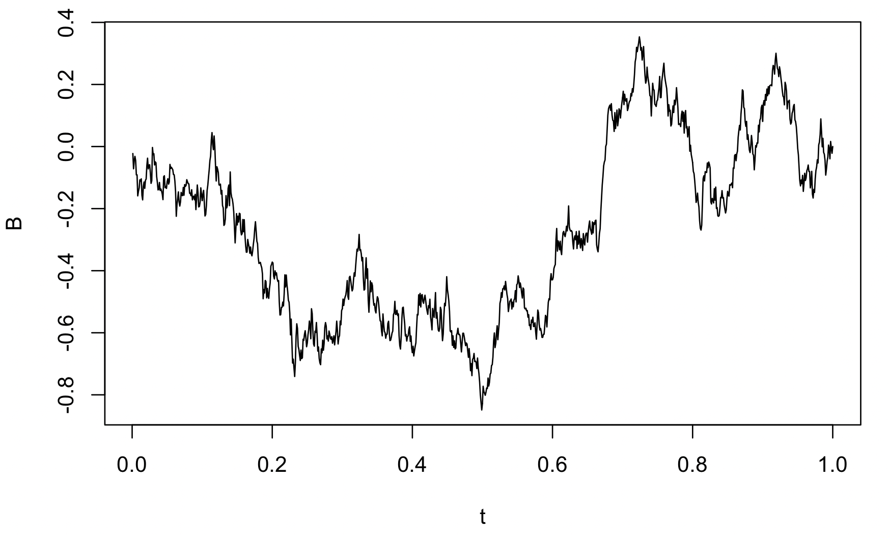
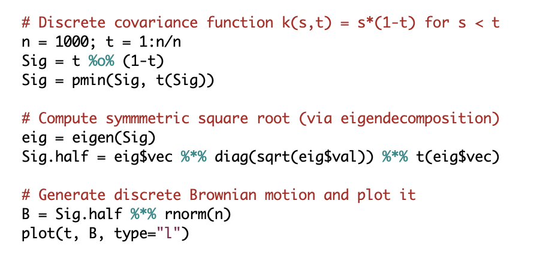

Stat 36-350Instructor: Alessandro (Ale) Rinaldo (arinaldo at cmu dot edu)Head TA: [SSH] Shamindra Shrotriya (shamindra at cmu dot edu) Important note: please direct emails on all course related matters to the Head TA, not the Instructor. The subject line of all emails should begin with "[36-350]". Grad TAs: (all emails are at andrew dot cmu dot edu) [JP] James Pak (jpak1) [XS] Xiaochen Sun (xsun3) Undergrad TAs: (all emails are at andrew dot cmu dot edu) [LC] Linpeng Chen (linpeng) [XG] Xiaofeng Gan (xgan) [AG] Aaron Gong (jingyaog) [LL] Li Li (lili2) [PM] Parth Maheshwari (parthmah) [SS] Shannon Sun (sysun) [ST] Steven Tang (sjtang) Class times: Tuesdays and Thursdays, 10:10-11:30am, POS 152. Lectures will take place in-person during the first half of Tuesday's class period. The labs (second half of the class on Tuesday and the entire class on Thursday) will be remote on Zoom (see Canvas for the passcode) Office hours: All office hours will be remote on Zoom (see Canvas for the passcode). Tuesday: 9:00am-10:00am [SSH] and Tuesday, 3:00pm-5:00pm [LC] Wednesday: 2:00pm-3:00pm [PM/SS] Thursday: 2:00pm-7:00pm [LC/AG/LL/PM/SS/JP/XS] Friday: 1:00pm-6:00pm [XG/AG/LL/PM/SS/JP/XS/ST] Syllabus: 36-350: Statistical computing, Fall 2022 Announcements: Piazza group (access also via Canvas). Make sure to check pinned posts for updates regularly. Labs: Submit completed lab work using Gradescope (access also via Canvas). The solutions will be posted on Canvas (See Files > solutions > labs) Software: the course will be based on the R language, a free software for statistical computing and graphics. We will use R Studio, an integrated development environment for R and Python |
  |
tidyverse)
tidyverse)
tidyverse)
ggplot2)